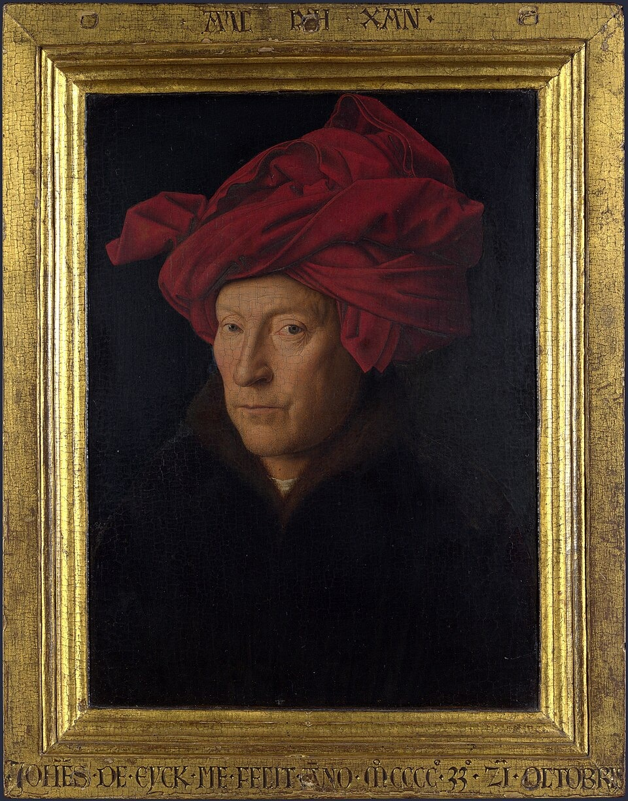

戴红头巾的男子（自画像？） Portrait of a Man (Self Portrait?)
扬·凡·艾克 · 1433年10月21日 · 伦敦国家美术馆
Jan van Eyck · 21 October 1433 · The National Gallery, London
图片：Wikimedia Commons，公有领域 / Image: Wikimedia Commons, public domain

发现 · Discover
胡茬 The stubble
他下巴上的胡茬，是一个个细小的颜料点画出来的。下巴上还在白色里混了一点蓝，让这些点像在反光。
His stubble is made of tiny individual dabs of paint. On the chin, a little blue mixed with white makes the dots seem to catch the light.
红色头饰 The red chaperon
他戴的不是头巾，而是一种叫“沙佩龙”的头饰，是15世纪流行的男士头饰。
He is not wearing a turban but a chaperon, a headdress fashionable for men in the 15th century.
上方的格言 The motto
画框上方用希腊字母写着“Als Ich Can”，意思是“尽我所能”。其中的“Ich”（我），读音也像他的名字“Eyck”。
On the upper frame, in Greek letters, is his motto “Als Ich Can”: “as I can”. The word “Ich” (I) also sounds like his name, Eyck.
下方的日期 The date
画框下方用拉丁文写着：“扬·凡·艾克于1433年10月21日画了我。”
On the lower frame, in Latin: “Jan van Eyck made me on 21 October 1433.”
原装画框 The original frame
这幅画至今保留着15世纪的原装画框。
The painting is still in its original 15th-century frame.
像刻出来的字 Painted to look carved
画框上的字是画上去的，但看起来像是刻出来的。
The lettering on the frame is painted, but made to look carved.
故事 · The story
一张脸 A face
1433年，在布鲁日，凡·艾克画了一个戴红色头饰的男人。这张平静的脸，几乎可以肯定就是他自己。
In 1433, in Bruges, Van Eyck painted a man in a red headdress. The impassive face is almost certainly his own.
1433年10月21日 · 伦敦国家美术馆 / 21 October 1433 · The National Gallery, London
画框上的字 Words on the frame
他在画框上方写下自己的格言“尽我所能”，在下方写下日期：“扬·凡·艾克于1433年10月21日画了我。”这幅画，是他对自己技艺的一份宣言。
On the upper frame he wrote his motto, “As I can”; on the lower, the date: “Jan van Eyck made me on 21 October 1433.” The painting is a statement of his skill.
一年之后 A year later
第二年，1434年，他画下了《阿尔诺芬尼夫妇像》，在镜子上方写下：“扬·凡·艾克来过这里。”
The following year, in 1434, he painted The Arnolfini Portrait and wrote above the mirror: “Jan van Eyck was here.”
尽我所能。 As I can.
作品档案 · Artwork record
| 画家（生卒年） · Artist (dates) | 扬·凡·艾克（约1390–1441） / Jan van Eyck (c. 1390–1441) |
|---|---|
| 画名 · Title | 戴红头巾的男子（自画像？） / Portrait of a Man (Self Portrait?) |
| 年份 · Date | 1433年10月21日 / 21 October 1433 |
| 材质 · Medium | 木板油画，很可能是橡木 / Oil on wood (probably oak) |
| 尺寸 · Dimensions | 26 × 19 cm |
| 收藏地 · Collection | 伦敦国家美术馆（编号 NG222） / The National Gallery, London (NG222) |
| 来源说明 · Credit line | 1851年购入 / Bought, 1851 |
关于画家 · About the artist
扬·凡·艾克（约1390–1441），尼德兰画家，主要在布鲁日工作，以极其精细的油画著称。
Jan van Eyck (c. 1390–1441) was a Netherlandish painter who worked mainly in Bruges, celebrated for the extraordinary detail of his oil paintings.
更多扬·凡·艾克的画 · More by Jan van Eyck